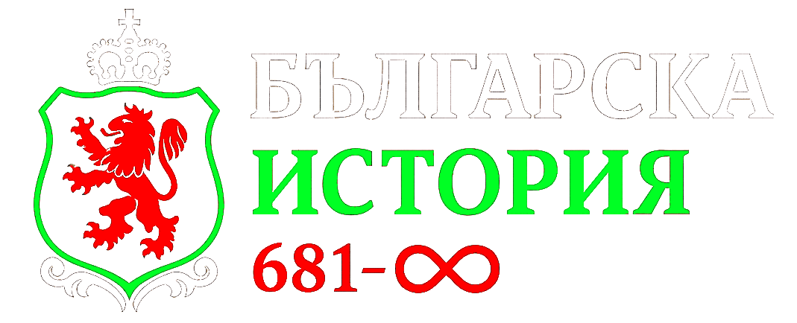

Начало
Хронология
Карта
Галерия
Викторина
Назад към картата
Важни събития
Галерия
Грешка при зареждане
Възникна проблем при зареждането на информацията. Моля, опитайте отново по-късно.
Върнете се към картата
×